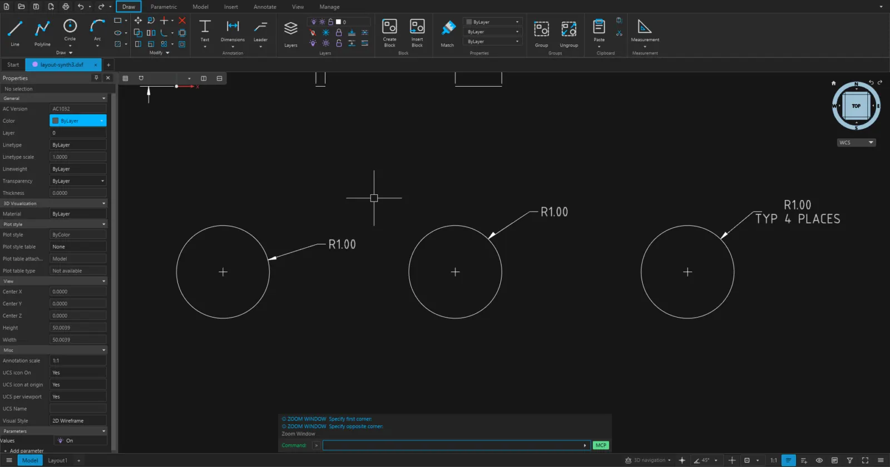

Aplikasi CAD untuk Arsitektur dan Teknik Sipil
Gambar 2D, dimensi, dan model 3D untuk kebutuhan desain dan gambar kerja. Jalankan langsung di peramban, atau pasang versi desktop untuk Windows.

SipilCAD
SipilStock Apps untuk Windows 11/10 64-bit. Launcher memasang dan memperbarui SipilCAD desktop untuk Anda.
Buka versi webTanpa instalasi, langsung di peramban.
Launcher belum ditandatangani. Windows SmartScreen bisa menampilkan peringatan saat pertama kali dijalankan: pilih More info, lalu Run anyway.
Yang bisa dilakukan
Gambar dan edit 2D
Garis, polyline, lingkaran, busur, dan hatch, lengkap dengan layer, blok, dan perintah edit.
Dimensi dan anotasi
Memberi dimensi, leader, dan teks langsung pada gambar.
DWG, DXF, dan PDF
Membuka berkas .dwg dan .dxf, lalu mengekspor gambar ke PDF.
Model 3D solid
Extrude, revolve, loft, dan sweep, serta operasi union dan subtract.